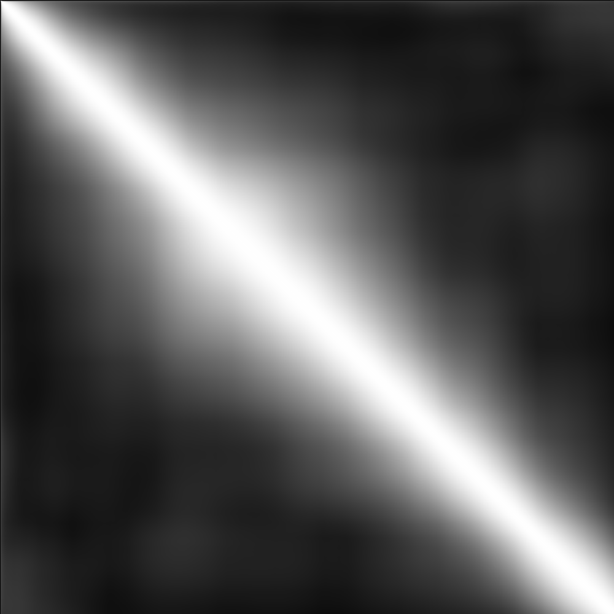

* Readme
** What is this program?
This is our re-implementation of the cerebellar model presented in the
following paper:
Tadashi Yamazaki and Shigeru Tanaka (2005),
Neural Modeling of an Internal Clock.
Neural Computation 17(5) 1032--1058.
One can set parameters arbitrarily and simulate the network dynamics.
Please notice that this program is independent of the original version
developed by Yamazaki and Tanaka (2005).
** Files
This folder contains the following files:
readme.txt :: This file
Makefile :: Makefile
internalclock.c :: The model
similarity.c :: Calculation of the similarity index. This program
uses libgd(*) for generating the PNG file of the
similarity matrix.
(*) http://www.libgd.org/
activity.dat :: Activity of model neurons (z_{i}(t)).
raster.dat :: Indices of active neurons {i| z_{i}(t) > 0} at t.
readout.dat :: Net input for given inter-stimulus interval, as shown
in Fig. 14, p.1048.
s.png (below):: PNG file of similarity matrix generated by similarity.c:

s.dat :: the 200, 400, 600, 800th rows of the similarity matrix
** Usage
1. Modify parameters in internalclock.c if necessary.
2. Install libgd to compile similarity.c.
3. make
4. ./internalclock The
value of inter-stimulus interval is used to compute the Net input.
You can use for example "./internalclock 1234 10"
5. The program generates activity.dat, raster.dat, readout.dat.
6. ./similarity activity.dat s
7. The program computes the similarity index and generates s.png and
s.dat.
** How to plot data using gnuplot
gnuplot (http://gnuplot.info/) is a data and function plotting
utility.
Active neurons are plotted by
gnuplot> plot 'raster.dat'
X and Y axes represent time and neuron index, respectively.
Net input for given inter-stimulus interval is plotted by
gnuplot> plot 'readout.dat' with line
X and Y axes represent time and the value, respectively.
Similarity indices at t=200,400,600,800 are plotted by
gnuplot> plot 's.dat' with line
X and Y axes represent time and the value, respectively.
** Authors
Takeru Honda and Tadashi Yamazaki
TH: Dept. of Information and Communication Engineering, University of
Electro-communications. TY: Lab. for Motor Learning Control, RIKEN
Brain Science Institute.
** Copyright
Copyright (c) 2007 RIKEN (The Institute of Physical and Chemical
Research) Some rights reversed.
** License
CC-BY
This work is licensed under the Creative Commons Attribution 3.0
License. To view a copy of this license, visit
http://creativecommons.org/licenses/by/3.0/
or send a letter to
Creative Commons, 171 Second Street, Suite 300, San Francisco,
California, 94105, USA.
----
Note from ModelDB administrator: This model is also available at:
http://platform.cerebellum.neuroinf.jp/modules/xoonips/detail.php?id=943
The model can be run online at the sim.neuinf.jp simulation platform: